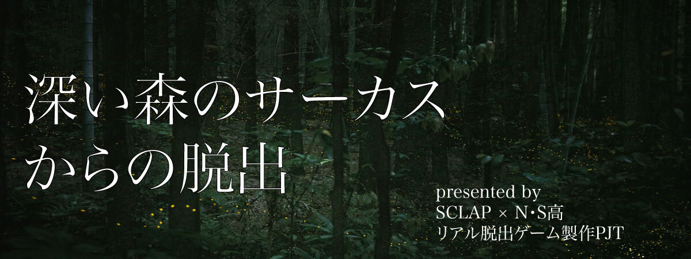

STAGE：1さぁゲームを始めよう！
ピエロの言うことに従っていいのかはわからないが、とにかく檻を出なければ始まらない。
あいつは檻の中に鍵があると言っていたな....。友人に檻の中の写真を撮って送ってもらおう。
写真を見る限り、檻の中には一枚のメモ、壊れた懐中時計、ボロボロの牛と虎のぬいぐるみが落ちているようだ。
メモには十二支方位が書かれている。友人によると、懐中時計の針は動かせるらしい。
※検索あり
STAGE：2部屋に複数あるうちの正解のドアを探し当てて脱出しろ！
友人と話して、これ以降はテレビ通話で周囲の状況を映してもらうことにした。
友人の捕まっていた地下牢がある部屋には出口らしき扉が5つ。扉の前には動物用の檻が8個ある。
それぞれ、うさぎ、いぬ、ねこ、ライオン、キツネ、ねずみ、ゾウ、とりが入っていて、檻のすぐ近くには看板が立てられていた。
そこには「正直者は2匹だけ。ホントのドアは一つだけ」と書かれている。
それを読むと、なんと檻に入っている動物たちが人間の言葉を喋り出した。一体何が起こっているのか全くわからない。
だが、このまま混乱していては友人を助けられない。冷静に正解のドアを見つけよう。
STAGE：2一人だけいる正直者の動物を見つけて、どのドアが正解かを推理する
（扉の番号のみ入力）
うさぎ：1と2の扉はハズレ。気をつけてね
いぬ：1の扉は大アタリ！あそこが唯一の出口だよ！
ねこ：うさぎは嘘をついているよ。5の扉がアタリ。そこ以外からは出られない。
ライオン：3には行かない方がいいな。恐ろしいものが待っているから。
キツネ：ライオンは正直者さ。信じた方がいい。
ぞう：4の扉がアタリみたいだよ。他の扉に行っても無駄。
ねずみ：ねこは大嘘つきだ！信じちゃいけない！
とり：ぞうは賢くてすごいんだ！本当のことを言っているに違いない！
STAGE：3家庭科室の課題とは
控え室にあるロッカーのうち、一つだけ開けられそうなロッカーがあった。
ロッカーの中をよく調べてみると、本を見つけた。どうやら、誰かの日記のようだ。
日記の各ページの写真を送ってもらい読んでみると、そこには想像を絶することが書かれていた。日記の書き手は混乱しているのか、文字は荒くわかりにくい文章だった。
要約するとこうだ。
「私は人間だ。妻も子もいる、ごくごく普通の人間だった。
このサーカスは狂気に満ちている。私のような人間を捕まえては洗脳を施し改造し、サーカスに忠実な生き物にしている。
私はまだ自我が残っているが、それもいつまで続くことか。帰りたい。愛しい家族の元に。しかし残念なことに、それは叶わないらしい。
最近はもう、何よりも大切だった妻の顔も、可愛らしい娘の声も、思い出せなくなってきている。それを悲しいと思う気持ちすらも薄れてきてしまっている。
あの人の元に帰れないのならば、せめて。私のようなこのサーカスの哀れな犠牲者を、少しでも減らそう。私が私であるうちに。
今日、久々に新たな人間が捕まった。時間がない。あの人間を逃さなければ」
そうか、だから。
だから最初に出会ったあのピエロは、わざわざ友人を逃してくれたのか。もしもう一度出会えたなら感謝を伝えたいと、ただそう思った。